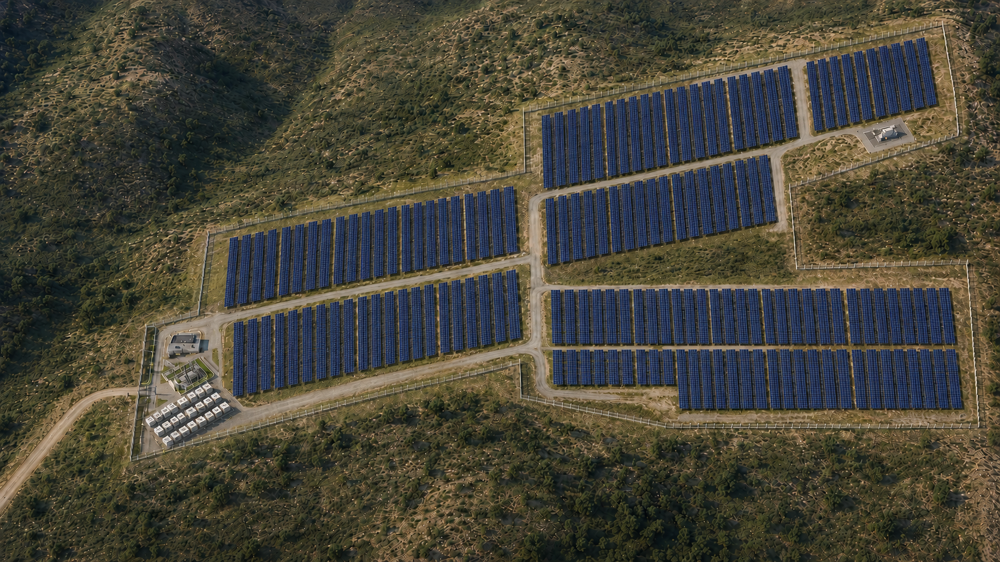
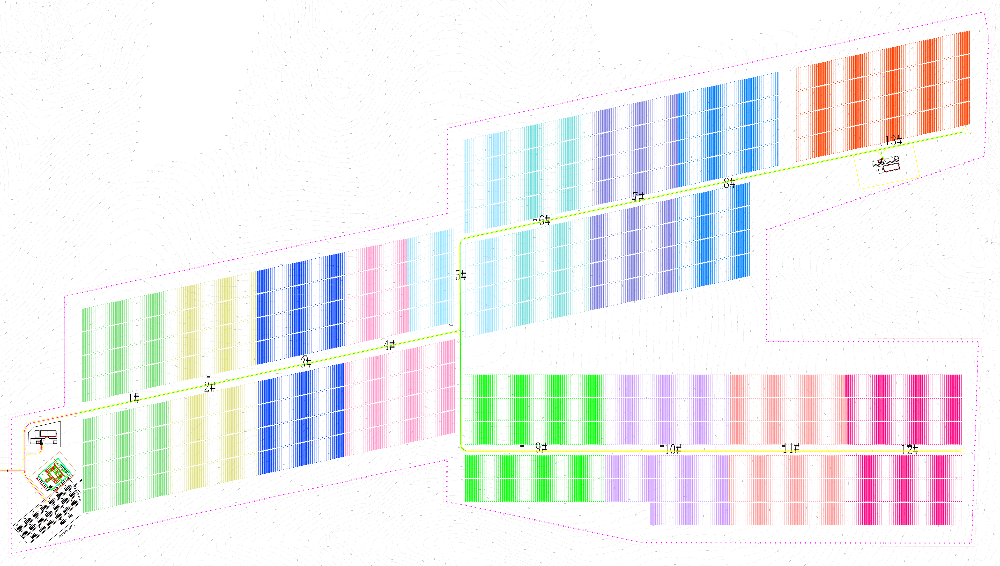

一期 · 南非西北省
BAPHALANE PHASE I · SOLAR + BATTERY STORAGE
巴法拉内光储项目

展开工程总平面 · 对照场区布置
场区全貌总平面图 · 图纸表达


项目规模
工作基线与图纸参数 · 最终以批准文件为准
- 光伏交流侧 · 工作基线
- 110 MWac
- 光伏直流侧 · 约值
- 142.7 MWp
- 储能功率 · 图纸表达
- 100 MW
- 储能容量 · 图纸表达
- 431 MWh
工程构成
从场区，看懂项目
沿着真实图纸展开三个系统。先看工程布置，再进入三维原理与空间讲解。
从工程展示，到现场收发
查看库存、办理出入库、追溯原始单据。设备到货汇总可在各展示页手动刷新。
项目资料依据与展示口径
首页概念效果图：2026年10月2日英文项目介绍第2页，沿用原介绍材料中的概念图，不代表现场实景或最终布置。查看完整英文项目介绍（5页 PDF）。
工程总图：现有附图1总平面图及提取的光伏分区矢量；光伏原理：附图5-2/5-3/5-4/5-7及A-2.5；储能和运维：附图3-2及附图4系列；接入关系：Overall SLD Rev C、Manama SLD Rev C与项目集群KMZ。
110 MWac、约142.7 MWp、100 MW、431 MWh按当前工作基线或图纸表达，最终配置以批准文件为准。组串长度、逆变器分组与部分设备配置待统一；现有线路展示约17 km＋8 km，与英文介绍书沿用的规划口径17 km＋19 km存在差异，待业主/Eskom书面确认。介绍书列示的合同工期尚未据原合同复核，不转换为开工或完工日历日期。
原理演示中的设备外形、距离和部分布置为示意，不代表竣工或实时运行状态。储能充放电的具体接线接口以批准单线图为准。
拖动旋转 · 滚轮缩放 · 点击设备查看说明
正在构建场区模型…
3D暂时无法显示，可在下方展开总平面图纸对照。
查看总平面图纸对照

布局与图例
从图纸看懂场区关系
- 粉色带点线
- 场区外围围栏，继续延伸至光伏区。
- 黑色轮廓
- 储能场坪、运维区及建筑轮廓。
- 黄色双线
- 场内道路，从西侧接入，沿站区与储能区衔接。
储能设备沿三条斜向长排布置，开关站位于上侧，运维区再往上。右侧为光伏场区。
3D用于理解空间关系；设备外形和入口开门方式为展示示意。
100 MW储能功率
431 MWh储能容量
PCS + XFMR储能变流及升压设备
图纸依据：附图1总平面、附图2道路、附图3-2储能、附图4-1/4-2/4-3运维图
三条斜向设备长排 · 原图粉色FENCE围栏 · 西侧道路入口
展示模型 · 非竣工 / 非实时运行模型
PV ARRAY · PRINCIPLE DEMONSTRATION
光伏发电原理演示
从单轴跟踪支架上的代表性组件串，沿直流、逆变、33 kV 集电到 IPP 升压站逐步看懂发电链路。
拖动旋转 · 滚轮缩放 · 点击设备讲解
代表性原理模型 · 距离压缩 · 非实时运行
正在构建光伏演示模型…
当前浏览器无法开启3D图形显示，请使用支持WebGL的新版浏览器。
设备镜头与支架演示
设备镜头
110 MWac交流侧工作基线
142.7 MWp直流侧约值
710 Wp组件选型工作基线
13 区总平面光伏分区
PV EQUIPMENT ARRIVAL
逆变器与箱变到货
按仓储物资档案规格分开显示，不跨型号、单位汇总。
点选设备卡或模型设备查看规格型号及到货口径。
跟踪控制与监视
气象站 RS485 · 逆变器 Modbus · PV/PLC 耦合信号
→
跟踪控制器 → 通信箱 → 光纤 / 以太网 → PV SCADA
依据：附图5-2/5-3/5-4/5-7 与 A-2.5 跟踪支架技术要求
图纸的组串长度、逆变器分组及单元容量存在差异；展示只讲原理，不用未统一数值。
710 Wp 为当前工作基线；WIA书面评审、批准排布及最终供货清单待补。
GRID CONNECTION · 132 kV
送出线路与电网接入
按项目集群 KMZ 折线展示线路走向；两段线路分别接入 Manama 的 Baphalane / Spitskop 132 kV 间隔及双母线，站端结构为示意。
IPP—Manama · 工作基线17 km
Manama—Spitskop · 工作基线8 km
合计 · 待书面确认≈25 km
拖动旋转 · 点击站点查看送出关系
正在构建线路模型…
当前浏览器无法开启 3D 图形显示，请使用支持 WebGL 的新版浏览器。
橙色虚线：线路走向参考银灰导线接入站端间隔 · 站内位置与塔位为示意
线路走向参考：P08114 Cluster KMZ（待 GIS/CAD 核对）；站间拓扑参考 Overall SLD Rev C 与 Manama SLD Rev C
里程工作基线：17 km + 8 km ≈ 25 km（待书面确认）